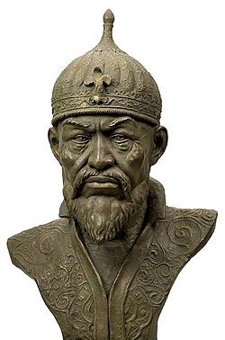
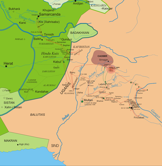
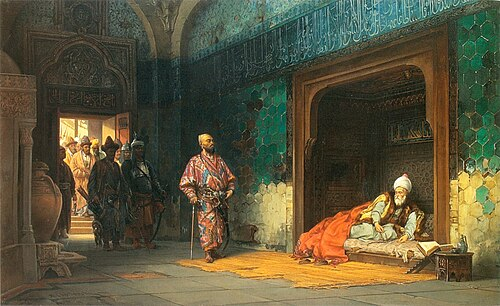
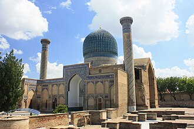

Timur
Timur (Çağatayca: تیمور - Temür) (8 Nisan 1336 - 18 Şubat 1405) sonrasında Timur Küregen (Çağatayca:
تيمور کورگن Temür Küregen), Timurlu İmparatorluğu'nun kurucusu olan Türkasker ve komutandır.1370'ten
itibaren düzenlediği seferlerle günümüzdeki Orta Asya, Rusya, İran, Hindistan, Afganistan, Kafkasya,
Ortadoğu ve Anadolu'nun büyük bir bölümünü ele geçirmiştir. Çağatay ulusunu oluşturan boylardan
Barlaslar'ın önderi olan Turagay ile Tekina Hatun'un çocuğu olarak 1336'da Semerkant yakınlarındaki
Şehrisebz'e bağlı Hoca Ilgar köyünde dünyaya gelen Timur, 1370'te Çağatay Hanlığı'nın batısını
denetim altına alan askeri bir lider olarak kendini göstermiştir.

Timur Sultanı
Timur, katıldığı bir savaşta ayağı aksak kalacak biçimde darbe aldığından dolayı kendisine Aksak
Timur anlamına gelen Farsça Timur-i leng, Türkçeleşmiş olarak Timurlenk, Batılılar tarafından ise
Tamerlane denilmekteydi. Timur'un düşüncesi Cengiz Han'ın ölümünden sonra parçalanan ve onun
torunları tarafından kurulan Çağatay Hanlığı, İlhanlılar ve Altın Orda kalıntıları üzerinde Cengiz
İmparatorluğunu tek bir siyasal çatı altında yeniden ayağa kaldırmaktı. Seferleri de bu düşüncesini
doğrular niteliktedir ve saltanatının sonuna doğru bunu büyük ölçüde başarmıştır. Önce yeniden
birleştirdiği Çağatay ulusunun başına geçti. Ardından batıda Hülagû Han topraklarını kendi
hükümdarlığına kattıktan sonra kuzeye yönelip, Altın Orda'nın üzerinde egemenlik sağladı. Ancak
1405 yılında Çin'i fethetmek üzere düzenlediği seferde yolda hastalanarak öldü. Timur, yaşamı
boyunca Cengiz Han yasasına çok önem vermiştir. Cengiz Han soyundan Kazan Han'ın kızı Saray Mülk
Hanım'ı nikâhına alarak damat anlamına gelen Küregen takma adını taşımaya hak kazanmıştır. Cengiz
Han'ın soyundan gelmediği için "Han" unvanı yerine "Emir" unvanını kullanmıştır ve ölünceye kadar
kukla bile olsa, Cengiz Han soyundan birini Han olarak yanında taşımıştır. Timur bir yandan Cengiz
yasasının uygulayıcısı olurken diğer taraftan kendine İslamın Kılıcı biçiminde atıfta bulunarak
fetihlerini meşrulaştırmak amacıyla İslami simgeler kullanmıştır. 1398'de Hindistan'da Delhi
Sultanlığı, 1401'de Suriye'de Memluk Devleti ve 1402'de Ankara Savaşı'nda Osmanlı Devleti'ne karşı
kazandığı zaferlerden sonra İslam dünyasındaki en büyük güç konumuna geldi. Hristiyan Gürcüler,
ateşe tapan Hindular ve İzmir'de Hristiyan Şövalyeleri'ne karşı hareket ederken gaza ödevini yerine
getiren gazi hükümdar imajını üstlendi. Ancak kimi tarihçilere göre Timur için yasa, şeriattan önce
gelmekteydi.
Seferlerinin en büyük ve uzunları Batı Asya'daki seferleridir. Birincisi üç, ikincisi beş ve üçüncüsü
yedi yıl sürmüştür. Kanlı ve yıkıcı seferlerine karşın, ele geçirdiği ülkelerdeki bilgelere,
ustalara ve sanatkârlara zarar verilmesine izin vermeyerek, onları başkentinde toplamış Semerkant'ın
o dönemin en önemli bilim, kültür ve sanat merkezlerinden biri olmasını sağlamıştır. Timur'un
kurduğu devlet, Türk-Moğol devlet ilkeleri ve Türk-Moğol askeri örgütlenme öğeleri ile İslam,
özellikle İran medeniyeti öğelerinin kendine özel bir birleşimidir. Müslüman olmasının yanı sıra
eski Türk-Moğol geleneklerini de yaşatmaya çalışmıştır.
Hindistan seferi

Timur'un Hindistan Seferi
Beş yıllık seferden dönüşte Timur, Çin üzerine bir sefer yapmayı düşünüyordu hatta hazırlık yapma
maksadıyla Muhammed Sultan'ı doğuya göndermiş bulunuyordu. Onun bu sırada niçin birdenbire fikrini
değiştirip Hindistan üzerine gitmeye karar verdiği açık değildir. Fakat bu seferi daha sonra yapmayı
tasarladığı seferlerine maddi kaynak sağlamak için yapmış olma ihtimali yüksektir.
Kafirlere cihad adı verdiği seferine 1398 yılı Mart ayında Semerkand'tan hareket ederek başladı.
Sultan Firuzşah'ın ölümünden sonra birtakım kişilerin yoldan çıkarak ahaliye zulmettiklerini duyan
Emir Timur bu yolsuzlukları kaldırmak için Delhi havalisine gitti. 17 Aralık 1398 günü Savaş düzeni
alan ordu Firuzşah'ın torunu olan Sultan Mahmud'un 10.000 atlı ve 40.000 piyadeden oluşan mükemmel
donanımlı ordusu ile karşılaştı.[36] Delhi Sultanının asıl güvendiği 120 adet iri fildi. Her file
zırh geçirip, sırtındaki kulelere beşer adet nişancı okçu koymuşlardı. Gerçi bu ordu Timur'un ordusu
karşısında sayıca üstün değildi ancak Timur'un ordusundan bazıları fillerin heybetinden korkuya
kapılmışlardı. Bu yüzden Timur, fillerden kurtulmak için bir hile düşündü. 500 hörgüçlü deve
toplanmasını, fitiller sarılmış kamışlar ve yağlanıp ısıtılmış pamuklar yüklenip iki ordu karşı
karşıya geldiğinde atların önüne sürülmesini emretti. İki ordu karşı karşıya geldiğinde, Timur
develerin sırtına yüklenen pamukları ve diğer yükleri ateşe verdirip fillerin üzerine sürülmesini
emretti. Develer ateşin sıcaklığını hissedince fillere doğru koşmaya başladılar. Filler alevler
içinde kendilerine doğru koşan develeri görünce bu hayvanlardan korkarak sırtındaki sürücüleri yere
atıp ayakları altında ezip, boyunlarını kırarak kaçmışlar ve karşılarına çıkan piyadeleri de
çiğneyip geçmişlerdir. Bunun üzerine Hindular dayanamayıp kaçtılar.
Sultan Mahmud ve Molu Han az bir askerle muharebe meydanından çıkarak şehre kaçtılar. Sultan Mahmut
ve Molu Han perişan bir halde şehre geldiler. Emir Timur öğle vakti Delhi'ye yetişti fakat akşama
kadar orada kaldı. Sultan Mahmut ve Molu Han, Toğan Han şehrin güney tarafındaki büyük kapıdan gece
kaçtılar. Timur'un askerleri ateşe tapan Hinduları Timur, Ganj nehrine kadar takip etti. Ganj
kıyılarında kafaları vurulduğunda nehrin kıpkırmızı kesildiği rivayet edilmektedir. Şehirde bulunan
Seyidlerin, büyüklerin, kadıların ve eşrafın gelip Timur'un huzuruna çıkmalarına izin verildi. Molu
Han'ın naibi olan Fazlullah-ı Belhî de bunlar arasında idi. Seyidler ve alimler Emirler aman için
ricada bulundular. Timur, Mevlena Nasırüddin Ömer'in şehre girmelerini kendisi adına okunacak
hutbeyi süslemesini emretti. Timur adına muhteşem bir hutbe tertip ettiler. Delhi'de Timur için
şahane meclisler tertip ettiler. Timur'un her seferden sonra yaptığı gibi tertip ettiği av
eğlencesinde aslanlar, kaplanlar, gergedanlar, mavi geyikler, tavus kuşları ve papağanlar avlandı.
Esrarlı Keşmir vadisine inildiğinde bölgenin güzelliği ve zenginliği karşısında hayretini
gizleyemeyen Timur bütün putperest mabedlerini yerle bir ettirdi. Timur'un zaferini anlatmak için
yazdırdığı fetihnameleri götürecek olan filler on sıra meydana getiriyordu. Sanatkarlar, ressamlar,
mimarlar eserlerini Timur'un başkentinde meydana getirsin diye sürüler halinde Semerkant'a
götürüldü. Bunlar arasında bulunan birçok taş yontucuları ve duvarcılar seferin başarıyla
tamamlanması şerefine Semerkant'ta yapılacak olan Cami-i Kebir'in inşasında çalışmaları için
Timur'un komutanları arasında pay edildi. Bu abidenin inşasında kullanılmak üzere oyma nakışlarla
nakışlanmış birçok taşlar ve Hinduların mabedlerindeki eşyalar Semerkant'a nakledildi. On iki ay
süren seferin ardından Semerkand'a ulaşan Timur bir süre burada kaldıktan sonra tekrar batıya
yürüdü.
Ankara Muharebesi

I. Bayezid'i esir alan Timur
1401 yılının Temmuz ayında kırk gün süren kuşatmadan sonra Bağdad'ı ele geçirmişti. Timur'un Şam,
Haleb ve Bağdad'ı ele geçirdiği esnada Karakoyunlu Kara Yusuf ile Sultan Ahmed Celayirî'nin Yıldırım
Bâyezîd'e sığınması gerçekleşmişti. Bu durum Yıldırım Bâyezîd ile Timur arasındaki bir başka problem
idi. Timur ile Yıldırım Bayezid karşı karşıya gelmeden önce, aralarında mektuplaşmaların olduğunu
tarihi kaynaklar bildirmektedirler. Mektupların, Farsça ve Arapça olarak yazıldıkları yine bu
mektupların içerisinde belirtilmektedir. Timur, Yıldırım Bayezid'e yazdığı birinci mektubunda; Kara
Yusuf ile Bağdat Sultanı olan Ahmed Celâyir'in, Osmanlı idaresine sığınma taleplerini kabul
etmemesini, bu iki kişiyi yakalayıp aileleri ile birlikte ya kendisine teslim edilmesini veya
öldürülmelerini ya da ülke sınırları dışına çıkarılmaları gibi tekliflerini iletmiştir. Yıldırım
Bayezid, Timur'un bu gibi isteklerini emrivâki saymış, muhtemelen kendisine iltica edenlerin
kışkırtmaları ve onun daha önceki Sivas kuşatması da dahil, Osmanlıya karşı beslediği istila
planları sebebiyle çok sert ve hakaret edici şekilde cevaplamıştır. Mektubunda Timur'a kudurmuş
köpek demekten çekinmeyen Bayezid, bu tarafa gelmezsen üç talak ile zevcelerin boş olsun ben de sana
karşı çıkmazsam zevcelerim üç talak ile boş olsun diye ağır bir dil kullanmıştır.
Timur'u, Osmanlı devleti üzerine yürümeye teşvik edenler arasında Erzincan Emiri Mutaharten,
Akkoyunlu Beyi Karayölük, Osmanlı karşısında topraklarını kaybeden diğer Türk beylikleri, özellikle
de Karaman beyi yer almaktaydı. Ayrıca Ceneviz, Fransa, Bizans ve Kastilya gibi Osmanlı karşıtları
da, bu savaşın olması yönünde Timur'la yakın ilişki içerisinde bulunmuşlardır. Batı Hristiyan
devletleri ve Bizans 1398'den beri Timur ile iyi ilişkiler içindeydiler. İstanbul'u kuşatma altında
tutan Bayezid'e karşı imparator II. Manuil, Timur'un egemenliğini tanıdığını haraç ödemeye hazır
olduğunu bildirmekte idi.Ayrıca Timur, Anadolu'da Tatar gruplara adam göndererek onları
Bayezid'e karşı kazanmaya çalışıyordu.
Timur, Karabağ kışlağında Bayezid'ten gelen Osmanlı elçisine, Osmanlılar daim Frenklere karşı gaza
yaptıklarından ona karşı yürümek Frenklerin kuvvetlerinin artmasına neden olur, bu nedenle Rum
diyarı üzerine yürümek yanlısı değilim yanıtını verdi. Fakat, Bayezid'in Karakoyunlu Kara Yusuf'u
himaye etmekte ısrarını bir meydan okuma olarak görüyordu. Timur son olarak barış için Bayezid'in
Kara Yusuf'u idam yahut kendisine teslim veya yanında uzaklaştırması koşulları ileri sürdü. Bunu
kabul ederse baba oğul oluruz gazalara yardım ederiz dedi ve 12 Mart 1402'de Karabağ'dan Anadolu'ya
hareket etti. Bayezid'e haber gönderip koşulları tekrarladı. Bayezid'ten tekrar elçi geldi. Timur,
savaş için hazır ol mesajıyla elçiyi geri gönderdi. Sivas sahrasında Bayezid'in elçileri önünde
ordusuna resmî geçit yaptırdı. Oradan tekrar barış önerdi. Bu kez eski Erzincan Beyi Taharten
ailesinin teslimini istedi. Bayezid'in büyük bir ordu ile hareket ettiği haberi geldi. Bayezid,
Timur'u karşılamak üzere Doğu Anadolu yollarına düşmüştü. Timur ise güneye yönelip Ankara'ya ulaştı.
Bayezid stratejik manevrada kaybetmişti. Aceleyle geri döndü. Yorgun askeriyle Çubuk Ovasında
elverişsiz susuz bir yerde konaklarken Timur'un ordusu en iyi koşullarda konuşlanmıştı. Savaş
Timur'un askerlerinin saldırısıyla başladı ve Osmanlıların sol kolu bozuldu. Tatarlar ve Timur'un
yanına sığınmış Anadolu beylerinin Bayezid'in ordusundaki askerleri kendi beylerinin yanına
kaçtılar. Kendi askeriyle kalan Bayezid'in bozgunu gören birlikleri kendi yurtlarına dönmeye
bakıyordu. Devlet ileri gelenlerinden her biri bir şehzadeyi alarak kaçmış ve Bayezid, Timur'un
bütün seferleri sırasında yanında bulundurduğu sadık adamlarından Mahmud Han tarafından esir
alınmıştı.
Ölümü

Timur'un mezarı Gur Emir
Timur, 18 Şubat 1405 tarihinde, Çin'e sefere giderken Otrar'da 69 yaşında öldü. Ölüm sebebi
kulunç rahatsızlığı idi. Hemen, Semerkand'a getirilerek torunu Halil Sultan tarafından, daha önce
ölmüş olan torunu Muhammed Sultan'ın Ruh Abâd yakınlarındaki medresesine defnedildi. Timur, torunu
Muhammed Sultan'ı tahtının varisi gibi görüyordu. Ancak Muhammet Sultan'ın 1404 yılında, beklenmedik
şekilde genç yaşında ölümünün ardından Timur bu çok sevdiği ve ardılı olarak gördüğü torunu için
Semerkant'ın seçkin bir tepesinde adına yaraşır bir büyük mozeleum inşasını emretmiş Muhammed Sultan
buraya defnedilmişti. Mozeleum, anıt mezar, camii ve medrese yapılarından oluşuyordu. Timur da
ölümünün ardından çok sevdiği torununun yanına defnedildi. O zamandan sonra Gur Emir, tüm Timur
hanedanın birlikte yattığı anıt mezar durumuna getirildi. Timur'un ölümünden sonra oğlu Şahruh,
diğer oğlu Miranşah ve torunu Uluğ Bey buraya defnedildi. Gur Emir Mozolesi yedi bölümden
oluşuyordu: Sağda Müslümanların dua ettiği hanaka, solda medrese ve merkezde mosoleum, iki tarafında
anıtı tamamlayan iki minare. Medrese ve hanaka günümüze ulaşamamıştır. Anıtın yüksek kubbesinin
altında üç sıra halinde yan yana yatan on kadar mermer mezar taşı bulunmakla birlikte Sadece
Timur'un mezartaşı siyah renkte nephritis taşıdır ancak burası sembolik mezardır. Gerçek mezar bu
salonun altındaki salonda bulunmaktadır ve ziyarete açık değildir. Timur'un bedeni, taş lahdinin
içinde yatmaktadır. İslam geleneği ile başı Mekke'deki Kabe'ye yöneliktir. Orta Asya geleneğinde
kutsal ölülerin mezarlarına konulan at kuyruğunun burada da bulunduğu mozelenin onarımı sırasında
ortaya çıkarılmıştır.
Timur, Şehrisebz'de yazlık sarayı yakınlarında, genç yaşta ölen iki oğlu, Cihangir ve Ömer Şah için
Mozeleum Kompleksi inşa ettirmişti. Bu kompleks içinde kendisi için de bir mezar odası inşa
ettirdiği bilinmekle birlikte bu konuda başka herhangi bir bilgi bulunmamaktaydı. 1960 yılında bir
kız çocuğunun Timurlu Mozelesi Kompleksi yakınlarda oynarken üzerine bastığı yerin çöküp açılan
çukura düşmesi ile birlikte Timur'un ölmeden kendisi için yaptırdığı mezar odası bulundu. Mezar
odasının duvarındaki yazıtta Timur'un mezar odası olduğunu kayıtlı olmakla birlikte odada devasa bir
lahit bulunmakta idi. Ağırlığı nedeniyle lahdin kapağı zorlukla açılabilmişti ve içinin boş olduğu
görülmüştü. Timur sağlığında mezar odasını hazırlatmış, bu mezar odası muhtemelen Orta Asya
geleneğine bağlı olarak Attila'ya, Cengiz Han'a yapıldığı gibi gizli tutulmuştu. Gur Emir ile
birlikte Şehrisebz'deki mezar kompleksi bırakılmış ya da unutulmuştur.
Mezarının açılması
19 Haziran 1941'de Sovyet antropolog Mikhail Gerasimov, Timur'un bedenini inceledi. Ancak Timur'un
mezarını açmadan önce protestolarla karşılaşmıştı ve mezarın lanetli olduğuna dair bir inanış vardı.
Anıt mezarında her kim olursa olsun Timur'un mezarını deşerse ülkesine savaş şeytanlarının
dolacağını söyleyen bir yazı olduğu söylenir.Gerasimov mezarı açtıktan 3 gün sonra 22 Haziran
1941'de Nazi Almanyası'nın Sovyetler Birliğine savaş ilan etmesi, bu söylentinin popülerleşmesine ve
günümüze dek gelmesine neden olmuştur.Lahitlerden çıkarılan kemikler Leningrad'da götürüldü ve
incelendi. Timur'un bedeninde yapılan araştırmada, kendi çağına göre uzun sayılabilecek bir boyda
1.73 cm olmakla birlikte, geniş göğüslü ve belirgin elmacık kemikli biri olduğu anlaşıldı.
Ayrıca onun kalça incinmesinden dolayı aksaklığı doğrulandı. Antropolog Gerasimov, kafataslarını
inceleyerek tüm hanedanın portrelerini yaptı. Kasım 1942'de Stalingrad Zaferinden önce İslamî
törenle tekrar defnedildi.
Başa Dönmek İçin Tıkla